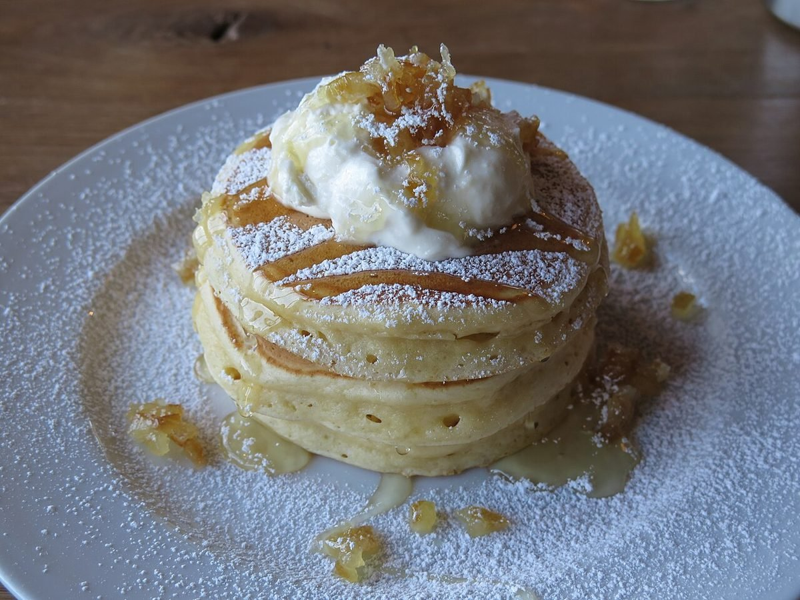
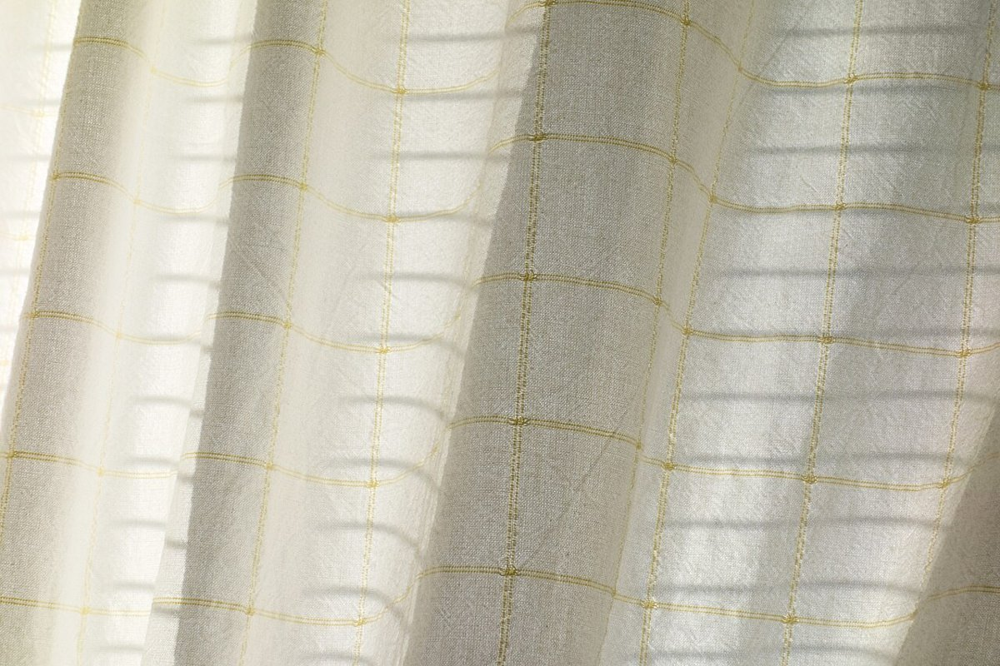
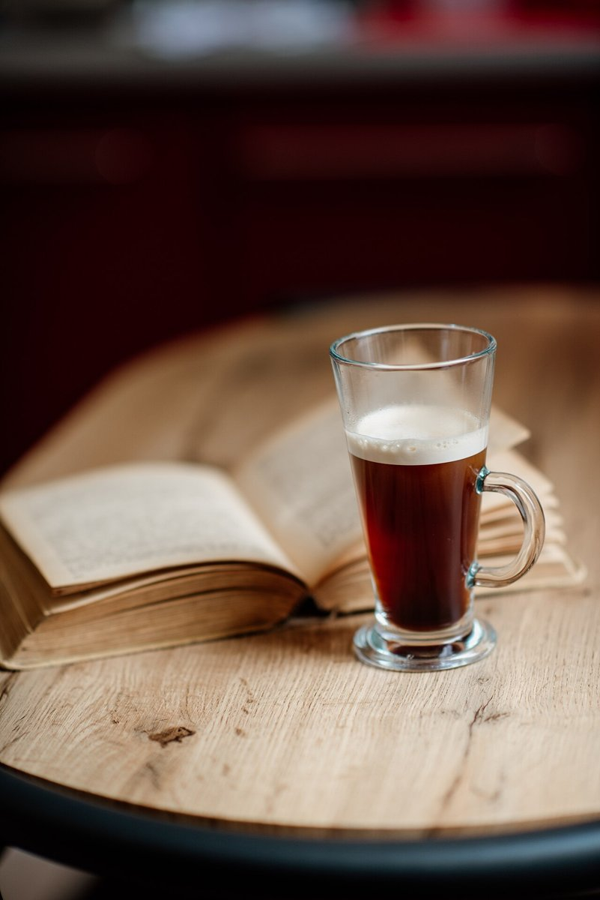

ABOUT
古い洋館を、そのまま居場所に
poturiは、加世田武田にあるカフェとギャラリー。建物はかつての「旧鰺坂(あじさか)医院」の跡で、昭和初期に建てられた洋風木造建築と紹介されています。病院だった建物を改装し、カフェとして使われているそうです。
店内ではお茶やごはんのほか、雑貨や食器、木工作品、ハンドメイド小物の展示・販売も行っていると紹介されています。
店名「poturi」の意味やオーナー様の想いは、確認できた資料では見つかりませんでした。当ページの言葉は、確認できた建物の由来と提供内容から制作側が考えたイメージです。



VOICE
口コミ(イメージ例)
以下は制作側が作った「こんな声が届くかも」というイメージ例で、実在のお客様の声ではありません。
古い洋館の雰囲気がすてきで、窓辺の席でほっとできました。
ふわっと焼きあがったホットケーキを、ゆっくり味わえました。
食器や小物も並んでいて、帰りにのぞくのが楽しみになりました。
ACCESS
アクセス・お店の情報
| 所在地 | 〒897-0002 鹿児島県南さつま市加世田武田18278-1 |
|---|---|
| 電話 | 準備中 |
| 営業時間 | 準備中(紹介サイトによって記載が異なるため、Instagramでご確認ください) |
| 定休日 | 準備中 |
| SNS | Instagram @poturi |